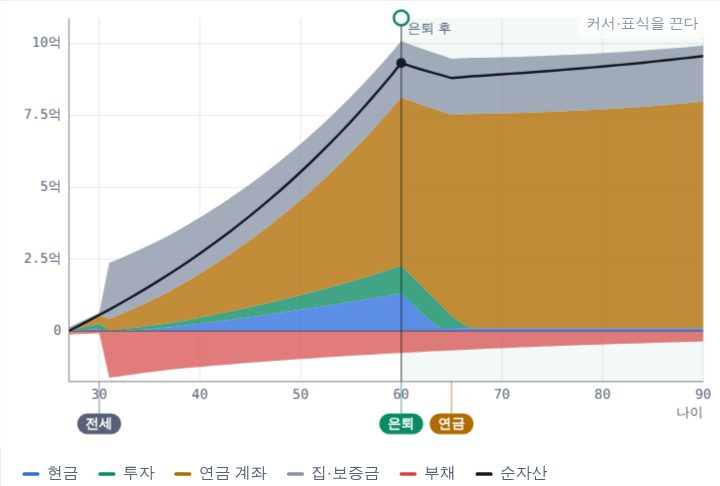
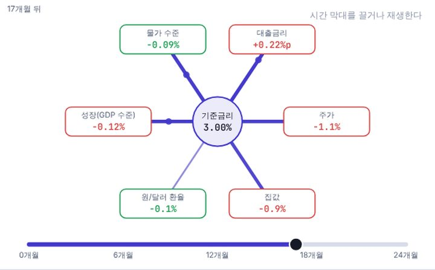
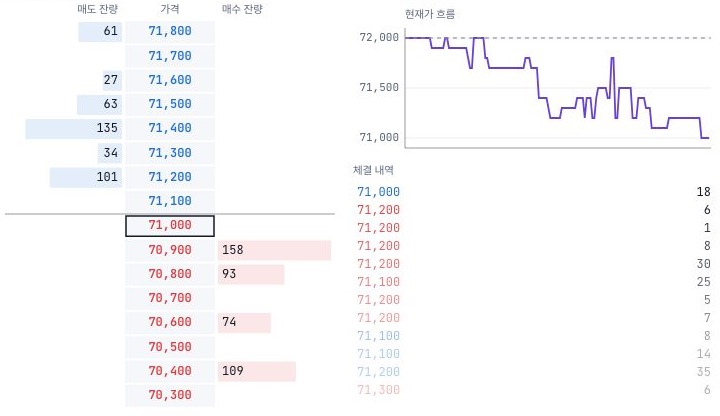
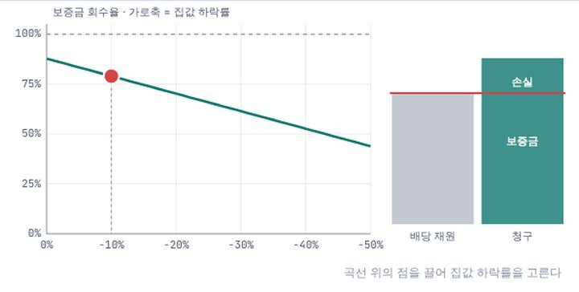
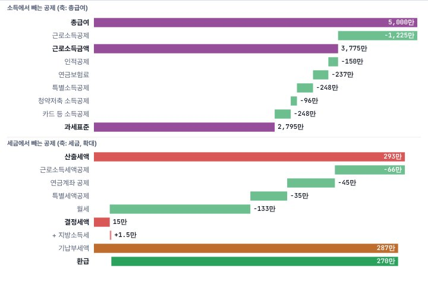
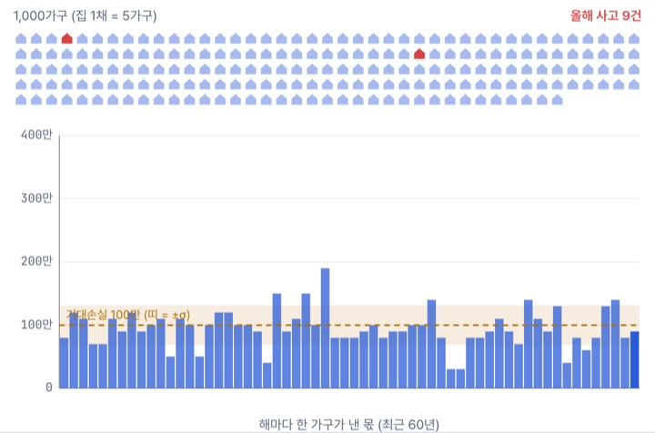
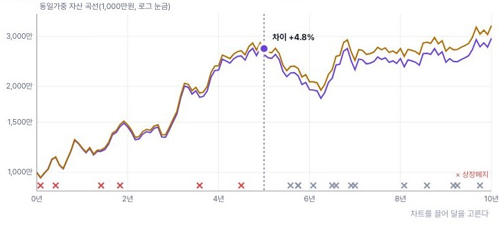
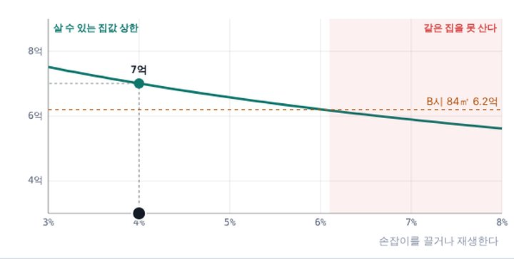
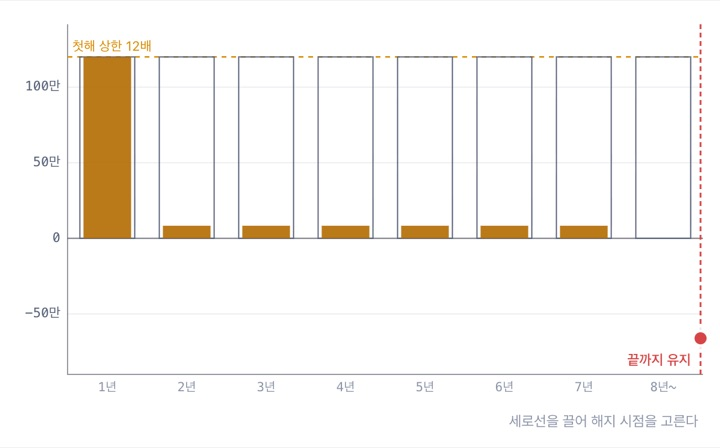

돈 관리의 기초
월급 명세서를 읽고 예산을 세운 뒤 비상금부터 모읍니다.
연봉을 바꿔 실수령을 보고, 기준금리를 올려 대출 이자와 집값이 어떻게 번지는지, 호가창에 주문을 넣고 연말정산을 계단으로 내려가 봅니다. 돈 관리 MoneyBook, 경제 뉴스 EconomicsBook, 주식 StockBook, 부동산 EstateBook, 세금 TaxBook, 보험 InsureBook이 함께 꽂힌 서가입니다.
6권 공개돈 · 경제 · 주식 · 부동산 · 세금 · 보험
조건에 맞는 책이 없습니다. 다른 검색어나 분야를 선택해 보세요.
질문 하나를 골라 시뮬레이터를 움직여 보세요. 각 실험은 해당 교과서의 그 장면으로 바로 이어집니다.

MoneyBook · 돈한 사람의 돈은 63년 동안 어떻게 흐를까?연봉·집·저축을 바꾸며 27세부터 90세까지 순자산 곡선을 그려 봅니다.직접 바꿔 보기 →
EconomicsBook · 경제기준금리 0.25%p는 어디까지 번질까?기준금리를 바꾸면 대출금리·주가·집값·환율이 서로 다른 시차로 움직이는 모습을 2년 동안 재생합니다.직접 바꿔 보기 →
StockBook · 주식주가는 어디에서 정해질까?주문이 흘러드는 호가창을 지켜보며 매도1호가가 다 팔리는 순간 현재가가 한 칸 오르는 것을 봅니다.직접 바꿔 보기 →
EstateBook · 부동산집값이 내리면 보증금은 얼마나 돌아올까?집값 하락률을 끌어 경매 배당이 보증금을 어디까지 돌려주는지, 깡통전세가 되는 선을 찾습니다.직접 바꿔 보기 →
TaxBook · 세금연말정산 환급은 어떻게 정해질까?총급여·가족·카드·연금저축을 넣어 과세표준에서 결정세액까지 한 계단씩 내려가고, 미리 낸 세금과 비교합니다.직접 바꿔 보기 →
InsureBook · 보험여럿이 나누면 왜 덜 흔들릴까?함께 나누는 가구가 늘수록 한 집이 내는 몫의 흔들림이 1/√N로 줄어드는 것을 봅니다.직접 바꿔 보기 →
StockBook · 주식살아남은 종목만 보면 무엇이 달라질까?상장폐지된 종목을 빼고 돌린 백테스트가 수익률을 얼마나 부풀리는지 두 곡선으로 비교합니다.직접 바꿔 보기 →
EstateBook · 부동산금리가 오르면 살 수 있는 집값은?금리를 끌면 DSR 한도가 줄어 살 수 있는 집값 상한이 내려가고, 같은 집을 못 사게 되는 금리가 드러납니다.직접 바꿔 보기 →
InsureBook · 보험설계사 수수료는 언제 얼마나 나갈까?첫해 선지급과 분급을 비교하고, 해지 시점을 끌어 환수와 손실을 봅니다.직접 바꿔 보기 →처음이라면 MoneyBook으로 돈의 큰 그림을 보고, 궁금한 주제가 생기면 해당 교과서로 넘어가세요.
월급 명세서를 읽고 예산을 세운 뒤 비상금부터 모읍니다.
헤드라인의 기준 시점을 읽고, 기준금리 변화를 내 대출 이자로 옮겨 계산합니다.
생활 자금과 위험을 정리한 뒤 시장과 상품의 원리를 봅니다.
주거비를 같은 저울에 올리고 보증금의 위험과 대출 한도를 계산합니다.
매달 떼인 세금이 연말정산에서 어떻게 정산되는지 계단으로 따라갑니다.
감당할 위험과 보험으로 넘길 위험을 나누고 보장 공백을 찾습니다.